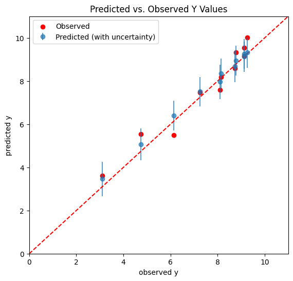

Bayesian Polynomial Regression
Contents
Bayesian Polynomial Regression#
%pip install pymc pytensor
Requirement already satisfied: pymc in /usr/local/lib/python3.10/dist-packages (5.7.2)
Requirement already satisfied: pytensor in /usr/local/lib/python3.10/dist-packages (2.14.2)
Requirement already satisfied: arviz>=0.13.0 in /usr/local/lib/python3.10/dist-packages (from pymc) (0.15.1)
Requirement already satisfied: cachetools>=4.2.1 in /usr/local/lib/python3.10/dist-packages (from pymc) (5.3.2)
Requirement already satisfied: cloudpickle in /usr/local/lib/python3.10/dist-packages (from pymc) (2.2.1)
Requirement already satisfied: fastprogress>=0.2.0 in /usr/local/lib/python3.10/dist-packages (from pymc) (1.0.3)
Requirement already satisfied: numpy>=1.15.0 in /usr/local/lib/python3.10/dist-packages (from pymc) (1.25.2)
Requirement already satisfied: pandas>=0.24.0 in /usr/local/lib/python3.10/dist-packages (from pymc) (1.5.3)
Requirement already satisfied: scipy>=1.4.1 in /usr/local/lib/python3.10/dist-packages (from pymc) (1.11.4)
Requirement already satisfied: typing-extensions>=3.7.4 in /usr/local/lib/python3.10/dist-packages (from pymc) (4.9.0)
Requirement already satisfied: setuptools>=48.0.0 in /usr/local/lib/python3.10/dist-packages (from pytensor) (67.7.2)
Requirement already satisfied: filelock in /usr/local/lib/python3.10/dist-packages (from pytensor) (3.13.1)
Requirement already satisfied: etuples in /usr/local/lib/python3.10/dist-packages (from pytensor) (0.3.9)
Requirement already satisfied: logical-unification in /usr/local/lib/python3.10/dist-packages (from pytensor) (0.4.6)
Requirement already satisfied: miniKanren in /usr/local/lib/python3.10/dist-packages (from pytensor) (1.0.3)
Requirement already satisfied: cons in /usr/local/lib/python3.10/dist-packages (from pytensor) (0.4.6)
Requirement already satisfied: matplotlib>=3.2 in /usr/local/lib/python3.10/dist-packages (from arviz>=0.13.0->pymc) (3.7.1)
Requirement already satisfied: packaging in /usr/local/lib/python3.10/dist-packages (from arviz>=0.13.0->pymc) (23.2)
Requirement already satisfied: xarray>=0.21.0 in /usr/local/lib/python3.10/dist-packages (from arviz>=0.13.0->pymc) (2023.7.0)
Requirement already satisfied: h5netcdf>=1.0.2 in /usr/local/lib/python3.10/dist-packages (from arviz>=0.13.0->pymc) (1.3.0)
Requirement already satisfied: xarray-einstats>=0.3 in /usr/local/lib/python3.10/dist-packages (from arviz>=0.13.0->pymc) (0.7.0)
Requirement already satisfied: python-dateutil>=2.8.1 in /usr/local/lib/python3.10/dist-packages (from pandas>=0.24.0->pymc) (2.8.2)
Requirement already satisfied: pytz>=2020.1 in /usr/local/lib/python3.10/dist-packages (from pandas>=0.24.0->pymc) (2023.4)
Requirement already satisfied: toolz in /usr/local/lib/python3.10/dist-packages (from logical-unification->pytensor) (0.12.1)
Requirement already satisfied: multipledispatch in /usr/local/lib/python3.10/dist-packages (from logical-unification->pytensor) (1.0.0)
Requirement already satisfied: h5py in /usr/local/lib/python3.10/dist-packages (from h5netcdf>=1.0.2->arviz>=0.13.0->pymc) (3.9.0)
Requirement already satisfied: contourpy>=1.0.1 in /usr/local/lib/python3.10/dist-packages (from matplotlib>=3.2->arviz>=0.13.0->pymc) (1.2.0)
Requirement already satisfied: cycler>=0.10 in /usr/local/lib/python3.10/dist-packages (from matplotlib>=3.2->arviz>=0.13.0->pymc) (0.12.1)
Requirement already satisfied: fonttools>=4.22.0 in /usr/local/lib/python3.10/dist-packages (from matplotlib>=3.2->arviz>=0.13.0->pymc) (4.48.1)
Requirement already satisfied: kiwisolver>=1.0.1 in /usr/local/lib/python3.10/dist-packages (from matplotlib>=3.2->arviz>=0.13.0->pymc) (1.4.5)
Requirement already satisfied: pillow>=6.2.0 in /usr/local/lib/python3.10/dist-packages (from matplotlib>=3.2->arviz>=0.13.0->pymc) (9.4.0)
Requirement already satisfied: pyparsing>=2.3.1 in /usr/local/lib/python3.10/dist-packages (from matplotlib>=3.2->arviz>=0.13.0->pymc) (3.1.1)
Requirement already satisfied: six>=1.5 in /usr/local/lib/python3.10/dist-packages (from python-dateutil>=2.8.1->pandas>=0.24.0->pymc) (1.16.0)
import numpy as np
import arviz as az
import matplotlib.pyplot as plt
import requests
import io
import csv
import pandas as pd
import pymc as pm
target_url = 'https://raw.githubusercontent.com/cfteach/brds/main/datasets/anscombe.csv'
download = requests.get(target_url).content
ans = pd.read_csv(io.StringIO(download.decode('utf-8')))
x = ans[ans.group == 'II']['x'].values
y = ans[ans.group == 'II']['y'].values
x = x - x.mean()
f=plt.figure()
f.set_figwidth(4)
f.set_figheight(2)
plt.xlabel('x')
plt.ylabel('y')
plt.plot(x,y,'C0.',alpha=0.6, markersize=10)
[<matplotlib.lines.Line2D at 0x7e4a779e3100>]
with pm.Model() as model_poly:
alpha = pm.Normal('alpha',mu=y.mean(),sigma=1)
beta1 = pm.Normal('beta1',mu=0.,sigma=1)
beta2 = pm.Normal('beta2',mu=0.,sigma=1)
epsilon = pm.HalfCauchy('epsilon', 5)
mu = pm.Deterministic('mu',alpha + beta1*x + beta2*x*x)
y_pred = pm.Normal('y_pred', mu=mu, sigma = epsilon, observed = y)
idata_poly = pm.sample(2000, tune = 2000, return_inferencedata=True)
100.00% [4000/4000 00:09<00:00 Sampling chain 0, 0 divergences]
100.00% [4000/4000 00:09<00:00 Sampling chain 1, 0 divergences]
az.plot_trace(idata_poly, var_names = ['alpha','beta1','beta2'])
array([[<Axes: title={'center': 'alpha'}>,
<Axes: title={'center': 'alpha'}>],
[<Axes: title={'center': 'beta1'}>,
<Axes: title={'center': 'beta1'}>],
[<Axes: title={'center': 'beta2'}>,
<Axes: title={'center': 'beta2'}>]], dtype=object)
Perturbed Dataset#
yn = y.copy()
yn += np.random.normal(0,.5, len(yn))
f = plt.figure(figsize=(7,3))
plt.plot(x,yn,'C0.')
[<matplotlib.lines.Line2D at 0x7e4a79047850>]
with pm.Model() as model_poly2:
alpha = pm.Normal('alpha',mu=y.mean(),sigma=1)
beta1 = pm.Normal('beta1',mu=0.,sigma=1)
beta2 = pm.Normal('beta2',mu=0.,sigma=1)
epsilon = pm.HalfCauchy('epsilon', 5)
mu = pm.Deterministic('mu',alpha + beta1*x + beta2*x*x)
y_pred_per = pm.Normal('y_pred_per', mu=mu, sigma = epsilon, observed = yn)
idata_poly_per = pm.sample(2000, tune = 2000, return_inferencedata=True)
100.00% [4000/4000 00:08<00:00 Sampling chain 0, 0 divergences]
100.00% [4000/4000 00:07<00:00 Sampling chain 1, 0 divergences]
az.plot_trace(idata_poly_per)
array([[<Axes: title={'center': 'alpha'}>,
<Axes: title={'center': 'alpha'}>],
[<Axes: title={'center': 'beta1'}>,
<Axes: title={'center': 'beta1'}>],
[<Axes: title={'center': 'beta2'}>,
<Axes: title={'center': 'beta2'}>],
[<Axes: title={'center': 'epsilon'}>,
<Axes: title={'center': 'epsilon'}>],
[<Axes: title={'center': 'mu'}>, <Axes: title={'center': 'mu'}>]],
dtype=object)
res2 = az.summary(idata_poly_per)
print(res2)
mean sd hdi_3% hdi_97% mcse_mean mcse_sd ess_bulk \
alpha 8.926 0.284 8.394 9.458 0.007 0.005 1673.0
beta1 0.453 0.060 0.340 0.566 0.001 0.001 2647.0
beta2 -0.129 0.021 -0.168 -0.090 0.001 0.000 1688.0
epsilon 0.613 0.196 0.315 0.962 0.005 0.004 1716.0
mu[0] 9.250 0.277 8.716 9.742 0.007 0.005 1709.0
mu[1] 8.343 0.273 7.856 8.892 0.007 0.005 1785.0
mu[2] 8.672 0.336 8.004 9.252 0.006 0.005 2892.0
mu[3] 8.926 0.284 8.394 9.458 0.007 0.005 1673.0
mu[4] 9.315 0.262 8.835 9.794 0.006 0.004 1958.0
mu[5] 7.962 0.480 7.057 8.867 0.010 0.007 2518.0
mu[6] 6.404 0.256 5.923 6.892 0.005 0.003 3055.0
mu[7] 3.431 0.475 2.546 4.362 0.009 0.007 2557.0
mu[8] 9.123 0.267 8.633 9.628 0.005 0.004 2635.0
mu[9] 7.503 0.253 7.017 7.968 0.005 0.004 2176.0
mu[10] 5.047 0.327 4.398 5.643 0.006 0.004 3316.0
ess_tail r_hat
alpha 1792.0 1.0
beta1 1945.0 1.0
beta2 1907.0 1.0
epsilon 1940.0 1.0
mu[0] 1704.0 1.0
mu[1] 1831.0 1.0
mu[2] 2202.0 1.0
mu[3] 1792.0 1.0
mu[4] 1978.0 1.0
mu[5] 2528.0 1.0
mu[6] 2512.0 1.0
mu[7] 2535.0 1.0
mu[8] 1866.0 1.0
mu[9] 2145.0 1.0
mu[10] 2717.0 1.0
ppc = pm.sample_posterior_predictive(idata_poly_per, model=model_poly2)
100.00% [4000/4000 00:00<00:00]
plt.plot(x,yn,'C0.')
az.plot_hdi(x,idata_poly_per.posterior['mu'],color='C4',hdi_prob=.68)
az.plot_hdi(x,idata_poly_per.posterior['mu'],color='C2',hdi_prob=.95)
<Axes: >
plt.plot(x,yn,'C0.')
az.plot_hdi(x,ppc.posterior_predictive['y_pred_per'],color='C4',hdi_prob=.68)
az.plot_hdi(x,ppc.posterior_predictive['y_pred_per'],color='C2',hdi_prob=.95)
<Axes: >
Notice there is a difference between the “uncertainty band†built with the posterior distribution and with the posterior predictive distribution, the latter being larger.
Both the posterior and the posterior predictive distributions incorporate uncertainty due to noise in the data, but they do so in different ways. The posterior reflects this uncertainty in the context of parameter estimation, while the posterior predictive distribution goes a step further, and reflects it in the context of predicting new, unseen outcomes.
Posterior predictive distribution inherently includes both the uncertainty in the parameter estimates and the noise in the data.
import xarray as xr
tmp_y_pred = ppc.posterior_predictive['y_pred_per']
y_pred_merged = xr.concat([tmp_y_pred.sel(chain=i) for i in tmp_y_pred.chain], dim='draw')
# In the context of Bayesian statistics and probabilistic programming (such as when using libraries like PyMC or xarray for
# handling posterior distributions), the term "draw" typically refers to a single sample from the posterior distribution.
np.shape(y_pred_merged)
(4000, 11)
y_pred_means = y_pred_merged.mean(axis=0)
y_pred_std = y_pred_merged.std(axis=0)
print(np.shape(y_pred_means), np.shape(y_pred_std))
(11,) (11,)
y
array([9.14, 8.14, 8.74, 8.77, 9.26, 8.1 , 6.13, 3.1 , 9.13, 7.26, 4.74])
dx = np.linspace(0,11,100)
dy = dx
# Plotting
plt.figure(figsize=(6.5, 6))
plt.errorbar(y, y_pred_means, yerr=y_pred_std, fmt='o', label='Predicted (with uncertainty)', alpha=0.7)
plt.plot(dx,dy,'--',color='r', label = "")
plt.scatter(y, yn, color='r', label='Observed')
plt.xlabel('observed y')
plt.ylabel('predicted y')
plt.title('Predicted vs. Observed Y Values')
plt.xlim((0,11))
plt.ylim((0,11))
plt.legend()
plt.show()
